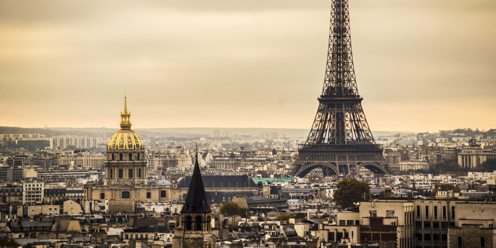

There are few cities on earth that capture the imaginations and hearts of travelers like Paris. The French capital is at once historic, modern, romantic, intellectual, grandiose and elegantly understated. First-time visitors often arrive in the City of Lights with grand expectations of extraordinary vistas, of stealing kisses from a lover along the Seine and of intellectuals debating weight matters in smoky cafes. You can find all these things and more in Paris, but the best way to enjoy the city is to explore the winding backstreets and avenues without any preconceptions at all.
Nearly every corner of the city exudes enchantment, thanks largely to the French's love of beauty for beauty's sake. When Baron Haussman designed the city as it stands today, he purposefully combined utility with beauty. The result is a city marked by wide tree-lined boulevards, stunning views and parks or gardens around seemingly every corner. The most beautiful places in Paris are often these green spaces, like the Jardin du Luxembourg with its Florentine-style palace and dramatic botanical arrangements that explode into color during spring. Beauty also abounds at the Tuileries Garden, with roots that date back to the 16th century. The pathways stretch from just behind the Louvre to a hilly picnic area perfect for spending an afternoon in the sun.
Artistic vibrancy resonates throughout Paris, and the city's museums house some of the world's richest and most important collections. It would take a lifetime to fully experience the Louvre, home to the world's most diverse and extensive collection of pre-20th century art. Although the museum is most famous for housing the Venus de Milo and the Mona Lisa, visitors can also bask in the works of Rembrandt, Caravaggio, Vermeer and countless others. Other equally impressive museums include the modern Centre Georges Pompidou, the light and airy Musee d'Orsay and the Rodin Museum, home to The Thinker and a lovely sculpture garden.
No visit to Paris would be complete without a trip to the Eiffel Tower. Once considered an abomination, the tower is now a symbol of the city and an icon of France. During the day, enjoy a picnic on the sprawling Champs de Mars with the tower providing one of the world's most romantic backdrops. Visit again after the sun sets to watch the tower sparkle with thousands of glittering lights. It is an absolutely breathtaking sight that every traveler should experience at least once.
Other must-see sights include the Arc de Triomphe, France's tribute to Napoleon and unknown soldiers, the Pere Lachaise cemetery, final resting place of Edith Piaf, Oscar Wilde and other notables, and the Notre Dame Cathedral, one of the world's most impressive examples of Gothic architecture.
